ÖzÜ Oyun Atölyesi
Atölye V Oyunları
| 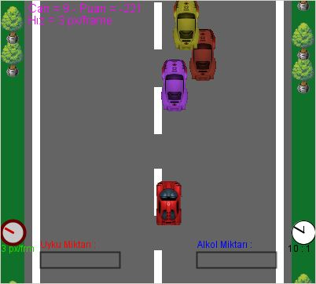 | Araba Anıl Doğru Kontroller: Yön tuşları |
| 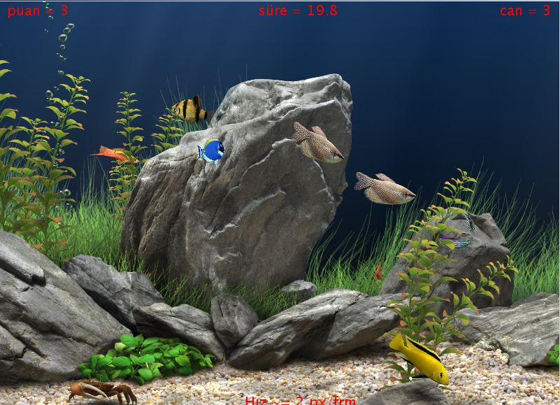 | Click Me If You Can Ahmet Burak Yüreğil Kontroller: Fare hareketleri |
| 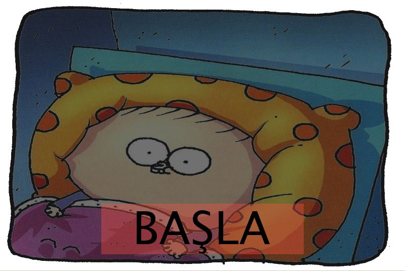 | Fırat'ın Kabusu Ezelsu Şimşek Gelme yatağın altında canavarlar var bizim. Demin yoktu şindi geldi. Eneee uyudum ki ben demin. |
| 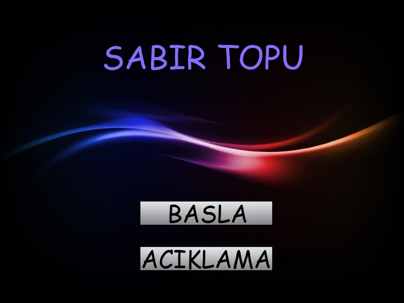 | Sabır Topu Görkem Görer Geçici ışınlanmayla engellerin ardına geçebilceğin yenilikçi bir beceri oyununa hazır mısın? |
| 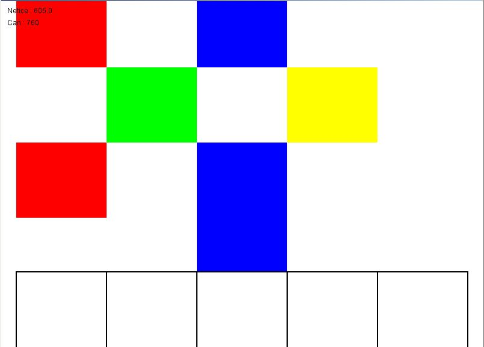 | Hero Hero Tire Ahmet Can Kontroller: <, z, x, c, v tuşları |
| 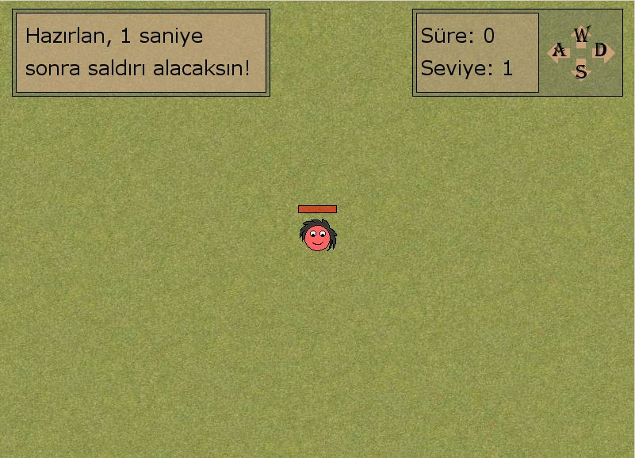 | Kırmızı Kafa Onur Gölgedar Alışılmışların dışında bir beceri oyunu arıyorsan mutlaka tıkla ve oyna! Kontroller: Her an değişebilir. |
| 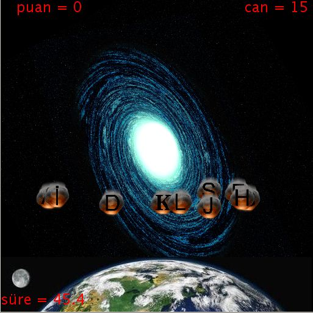 | Klavye Burak Ergün Şimdi Dünya'yı kurtarma sırası sende. Haydi geç klavyenin başına ve göster hünerini. |
| 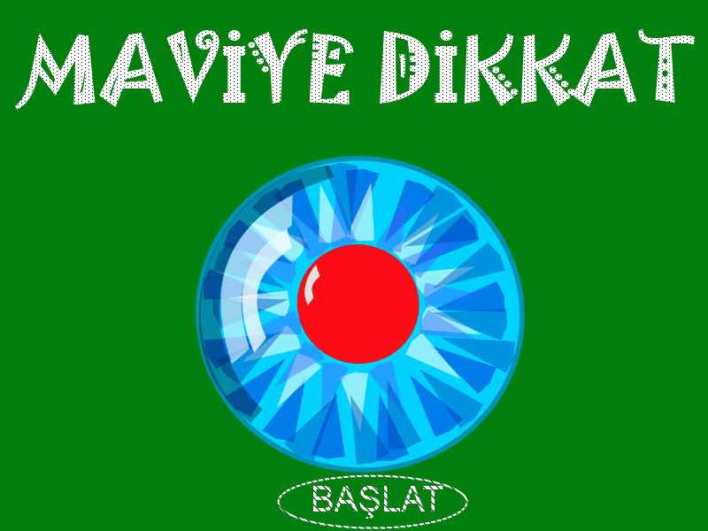 | Maviye Dikkat Ahmet Cihan Özcan Kontroller: Yön tuşları |
| 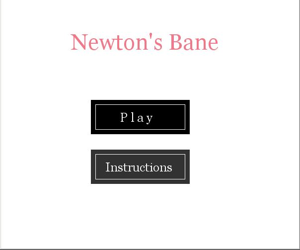 | Newton's Bane Aslı Ağılönü Kontroller: W-A-S-D ve yön tuşları |
| 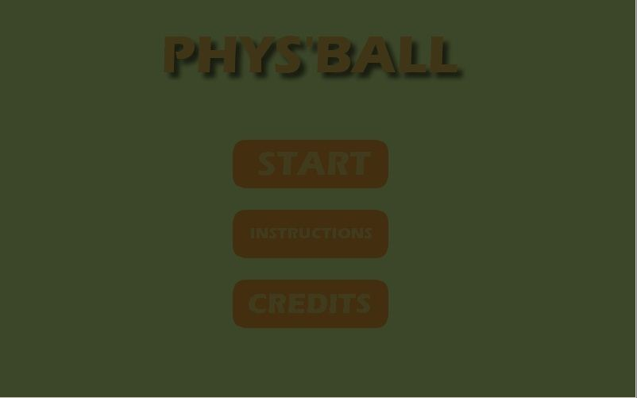 | Phys'Ball Furkan Balcı Kontroller: W-A-S-D ve yön tuşları |
| 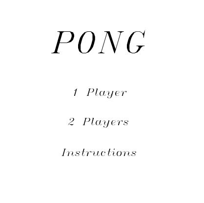 | Pong Anıl Doğru Kontroller: W-A-S-D ve yön tuşları |
| 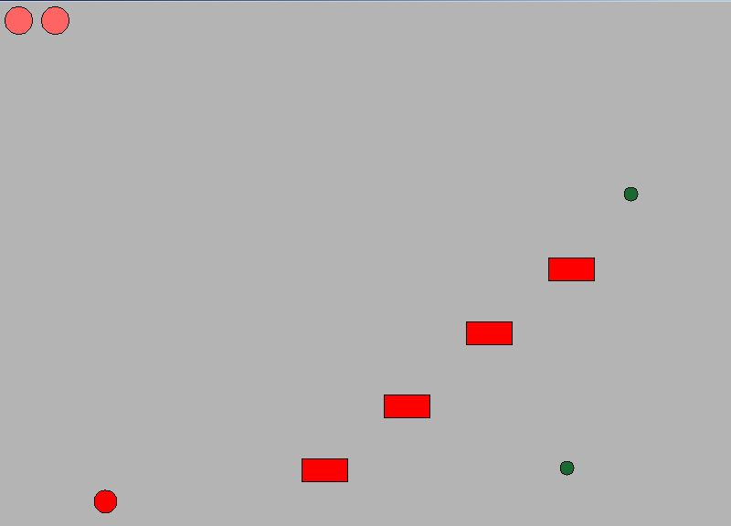 | GG Derin Akyel Kontroller: Yön tuşları |
| 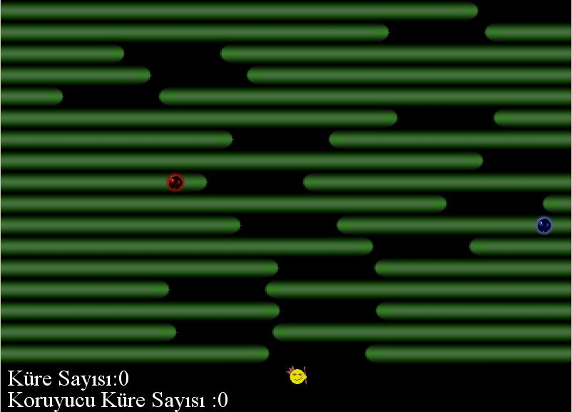 | Son Kral Tuğrul Şöllü Kontroller: Yön tuşları |
| 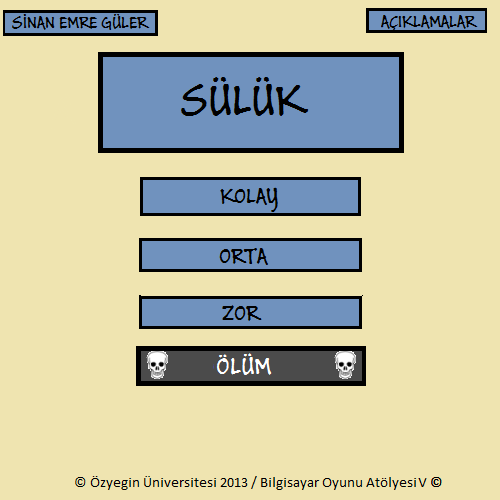 | Sülük Sinan Emre Güler Engellere takılmadan sülüğünü hayatta tut! |
| 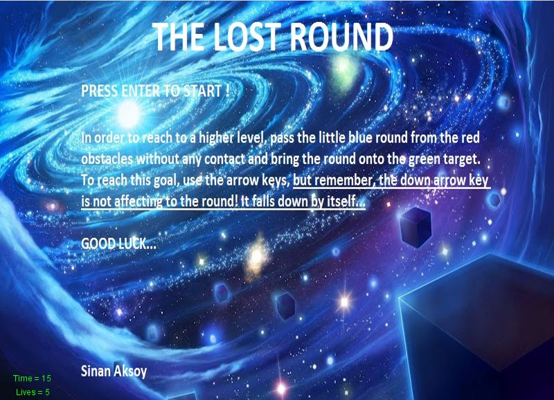 | The Lost Round Sinan Aksoy Kontroller: Yön tuşları |
| 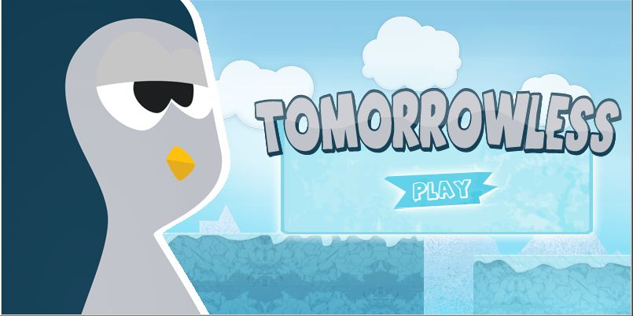 | Tomorrowless Ahmet İstemihan Öztürk Son zamanların en hit oyun türü "Endless Run"a Şirin bir bakış olan bu oyunda küresel ısınmayla parçalanmış buzullardan kaçan penguen'e yardım edebilecek misin? |
| 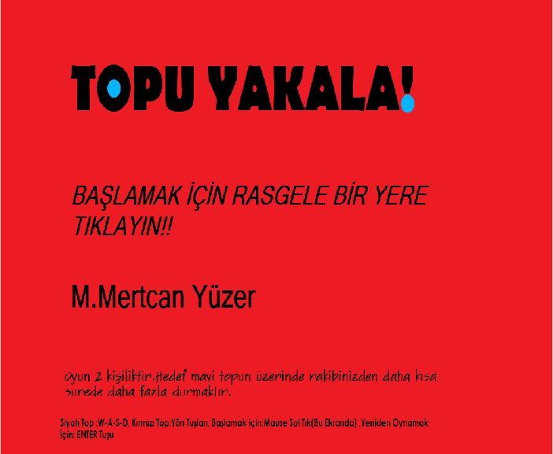 | Topu Yakala Mertcan Yüzer Kontroller: W-A-S-D ve yön tuşları |
| 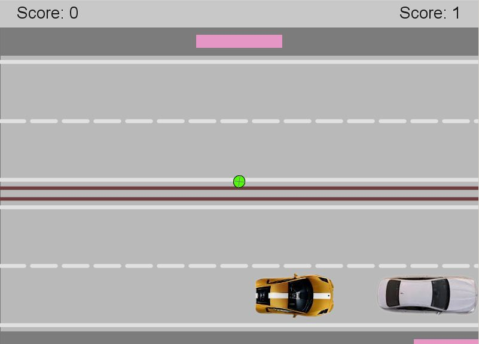 | Traffic Pong Muratcan Çiçek Trafikte sıkıldıysan sen de Pong oyna! |
| 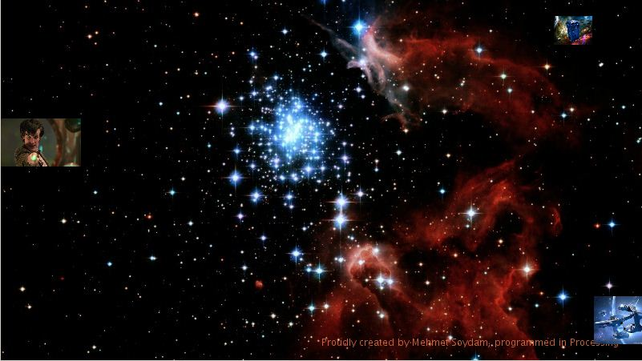 | Dr. Who's last game Mehmet Soydam Kontroller: Fare hareketleri |
| 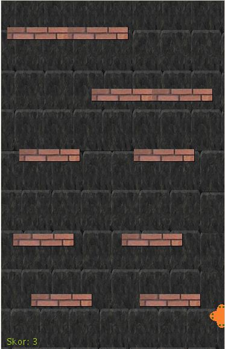 | XAces Ezgi Türe Kontroller: Fare hareketleri |
| 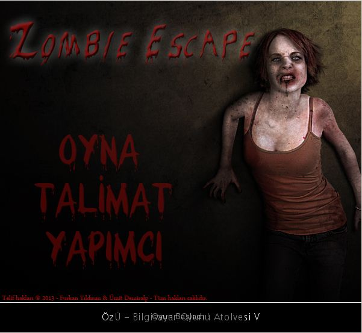 | Zombi Escape Furkan Yıldırım - Ümit Demiralp İki suçlunun hapishaneden kaçışını yönlendiriyorsunuz. Tabi bu söylendiği kadar kolay değil çünkü tüm dünyayı sardığı gibi hapishaneyi de zombiler sarmış durumda. Arkadaşınla birlikte zombilerden kaçabilecek misin yoksa onlara öğle yemeği mi olacaksın? Kontroller: Oyuncu 1: W-A-S-D ve J / Oyuncu 2: Yön Tuşları ve ENTER Ipucu: Oyuncu 1 anahtarları toplar, oyuncu 2 arkadaşına can basar. |
| 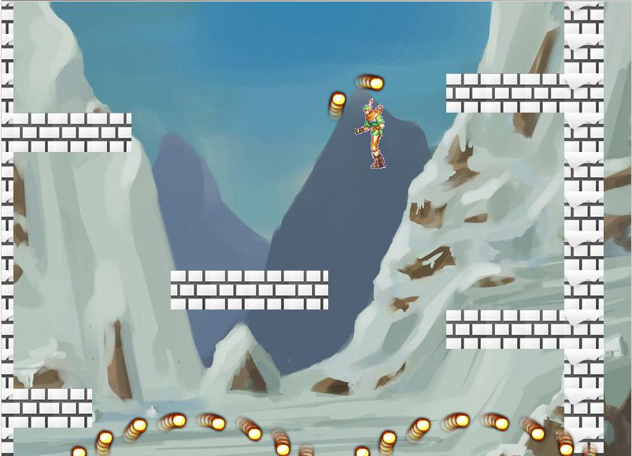 | Kayıp Güneş İrfan Bilaloğlu - Kemal Aydın - Uğur Kurt Güneşin sana ihtiyacı var. Buz canavarından kurtarman gerekli, insanlar için tek umut sensin. Yüksel ve güneşi tekrar alevlendir! Kontroller: W-A-S-D, space ve fare |
| 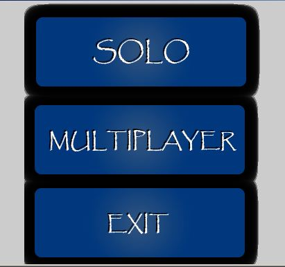 | Rot 4 Fatih Tuna Kontroller: Boşluk tuşu |
| 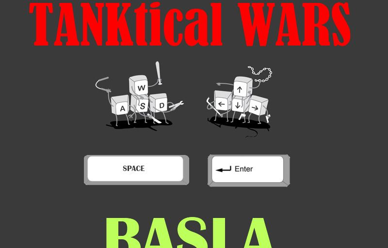 | Tanktical Wars İbrahim Tilki Bu oyunda da çoğu oyunda olduğu gibi amaç rakibinizi yok etmektir. Oyun iki kişi ile oynanan bir tank savaşı oyunudur. Yanlız dikkat etmelisiniz merminiz sınırlı. Haritada zaman zaman çıkan mermi ve sağlıkları toplayarak puan kazanabilir ve rakibinize karşı büyük avantaj sağlayabilirsiniz. İyi eğlenceler! |